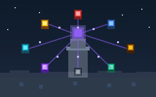
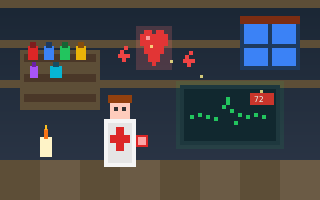
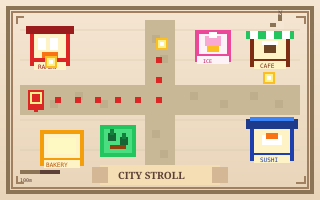

AI Systems Engineer & Agent Developer
Autonomous agents, production RAG, real-time biosignal AI, and compound LLM systems — built to hold under clinical and enterprise load.
I build production-grade AI systems at the intersection of intelligent agents, biomedical signals, and scalable infrastructure. My work spans autonomous multi-agent pipelines, domain-specific LLM fine-tuning, and real-time biosignal intelligence — engineered to hold under clinical and enterprise load, not just in notebooks.
As the field moves from single-model inference to compound, agentic architectures, I focus on what that transition actually demands: reliable agent orchestration with LangGraph and MCP, retrieval pipelines with genuine recall fidelity, and evaluation frameworks that surface failure modes before they reach production. I expose AI capabilities through streaming APIs and tool-use interfaces so they compose cleanly into real products.
My cross-domain background — ML research, biosignal processing, and full-stack engineering — lets me own the entire system from sensor acquisition and model architecture to API design and cloud deployment. I'm drawn to where AI creates measurable, irreversible impact: clinical decision support, intelligent developer tooling, and multilingual knowledge systems.
AI-powered career path visualization platform. Users describe their goal in natural language; a 3-stage pipeline — Graph Neural Prompting → LLM generation → GNN enhancement — produces an interactive skill-node roadmap with difficulty scores, prerequisite links, and progress tracking.
FastAPI service for continuous ECG signal processing from Apple Watch and clinical wearables. Provides batch R-peak detection via REST and live waveform analysis via WebSocket streaming, feeding physiological signals into the platform's health layer.
Three-model voting ensemble (GNN + Statistical + Random Forest) for detecting covariate, structural, and outlier-pattern drift across the platform's production models. Integrated with GCP Cloud Monitoring for real-time alerting and HTML drift reports.



LangGraph-orchestrated pipeline of specialized agents — Planner, Web Searcher, Paper Analyzer, Synthesizer, Critic — that autonomously produces structured research briefs with citations and confidence scores from a single natural-language query.
Automated adversarial evaluation framework that probes LLMs for jailbreak susceptibility, demographic bias, and capability drift. Integrates with CI/CD to gate model deployments on configurable safety thresholds.
Multimodal RAG pipeline ingesting ECG/PPG waveforms and clinical notes to generate structured SOAP summaries and triage recommendations. Designed around FHIR-compatible data contracts for real-world clinical integration.